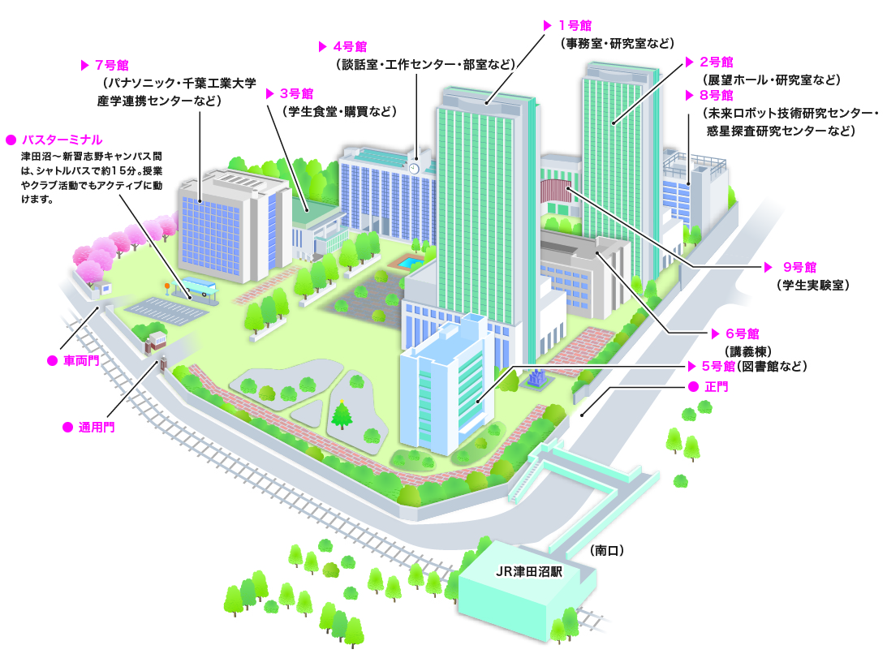
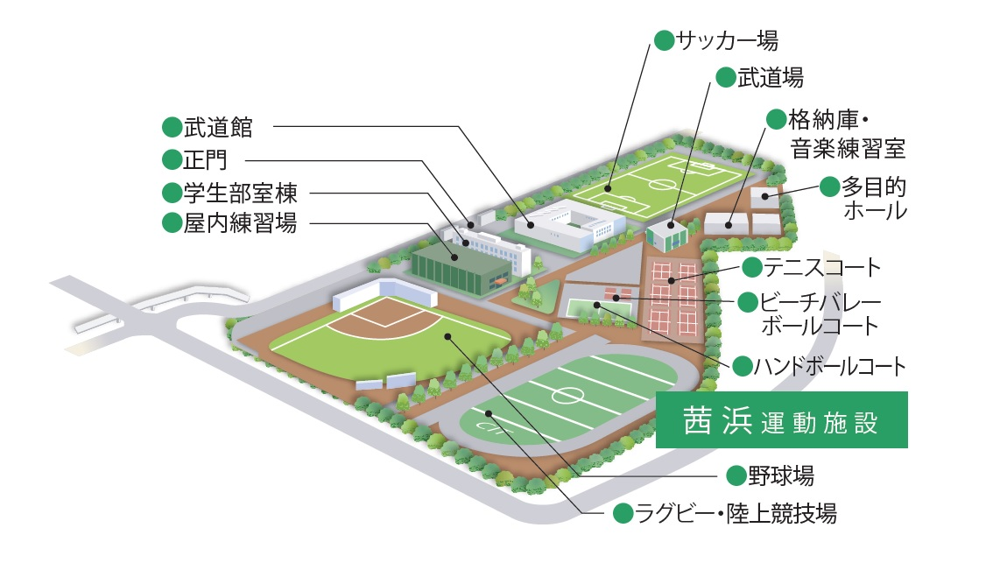

<!DOCTYPE html>
<html lang="ja">

<head>
    <meta charset='utf-8'>
    <title>千葉工大二輪部</title>
    <meta name='viewport' content='width=device-width, initial-scale=1'>
    <link rel='stylesheet' href='css/style.css'>
    <script src="js/script.js" defer></script>
    <base href="index.html">
    
<body bgcolor="black" text="white"></body>
</head>

<header id="header">
    <h1>千葉工大二輪部</h1>
    <div class="menu">
        <div class="row">
            <li><a href="index.html">ホーム</a></li>

            <li><a href="information.html">活動内容について</a></li>
            <div class="katudou">

            </div>
            <li><a href="room.html">部室紹介</a></li>
            <div class="busitu">
            </div>
            <!-- <li><a href="schoolbike.html">部車・装備紹介</a></li>
        <div class="busya">

        </div> -->
            <li><a href="scheduel.html">スケジュール（今後の予定）</a></li>
            <div class="scheduel">

            </div>
            <li><a href="another.html">その他ご案内</a></li>
        </div>
    </div>
</header>
<div class="main">
    <!-- <div class="mainvideo">
        <video src="video/sample.mp4" autoplay loop muted playsinlin></video>
    </div> -->
    <h2>部室</h2>
    <div class="row">
        
        <iframe src="https://www.google.com/maps/embed?pb=!1m18!1m12!1m3!1d3240.5223805063674!2d140.0184136097845!3d35.68876072944861!2m3!1f0!2f0!3f0!3m2!1i1024!2i768!4f13.1!3m3!1m2!1s0x602280271c38ab81%3A0x9b26ed71e15bb456!2z5Y2D6JGJ5bel5qWt5aSn5a2mIOa0peeUsOayvOOCreODo-ODs-ODkeOCuQ!5e0!3m2!1sja!2sjp!4v1718074729147!5m2!1sja!2sjp" width="600" height="450" style="border:0;" allowfullscreen="" loading="lazy" referrerpolicy="no-referrer-when-downgrade"></iframe>
    </div>
    <div class="title1">
    <a href="https://www.it-chiba.ac.jp/institute/campus/tsudanuma/">千葉工業大学津田沼キャンパス　案内</a><br>
    <div class="memo">4号館　8階　体育会二輪部部室</div>
    </div>
    <h2>ガレージ</h2>
    <div class="row">
    
    <iframe src="https://www.google.com/maps/embed?pb=!1m18!1m12!1m3!1d6483.3600245617345!2d140.00219513109397!3d35.66025465238763!2m3!1f0!2f0!3f0!3m2!1i1024!2i768!4f13.1!3m3!1m2!1s0x60187faf557bf95b%3A0x5a244e8ea7230a6f!2z5Y2D6JGJ5bel5qWt5aSn5a2m6YGL5YuV5pa96Kit44K144OD44Kr44O85aC0!5e0!3m2!1sja!2sjp!4v1718076005203!5m2!1sja!2sjp" width="600" height="450" style="border:0;" allowfullscreen="" loading="lazy" referrerpolicy="no-referrer-when-downgrade"></iframe>
    </div>
    <div class="title1">
    <a href="https://www.it-chiba.ac.jp/institute/campus/akanehama/">千葉工業大学茜浜運動施設　案内</a><br>
    <div class="memo">茜浜運動場　学生部室棟</div>
    </div>
</div>
</div>
</body>

</html>